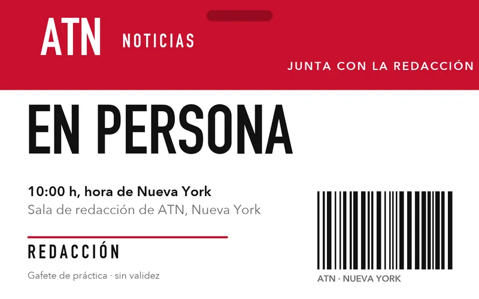
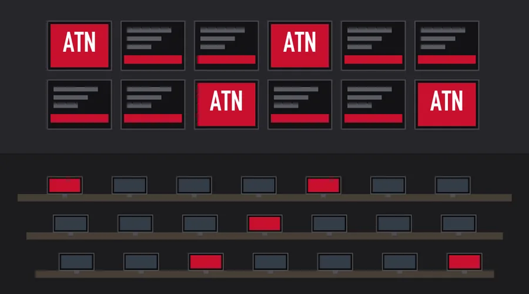

Oficina de Tom Wambsgans · Presidente de noticias
La primera junta de Tom con la redacción
10:00 h, hora de Nueva York

Ya vienen … de la redacción
El registro cierra la víspera a las 18:00 h.
Orden del día
- 1
Tom se presenta
Quién es y cómo va a trabajar con la redacción.
- 2
Lo que sigue para ATN
Las prioridades de las próximas semanas.
- 3
Las preguntas de la redacción
Empezando por las más votadas del muro.

Regístrate
Te confirmamos por correo tu lugar y cómo entras. Después puedes preguntar en el muro.
Tu lugar quedó
En unos minutos te llega la confirmación. Revisa también tu carpeta de spam.
Manda tu preguntaLas preguntas de la redacción
Conectando…Puedes votar sin registrarte: un voto por pregunta en cada dispositivo. En el muro solo sale tu nombre de pila.
El resumen de hoy
El primer resumen llega mañana a las 7:00.
Aviso de privacidad
Tus datos los recibe la oficina de Tom Wambsgans en ATN solo para confirmar tu registro y mandarte tu acceso a la junta. En el muro solo sale tu nombre de pila. No los compartimos con nadie. Para darte de baja, responde "baja" a cualquiera de nuestros correos y te borramos de la lista.